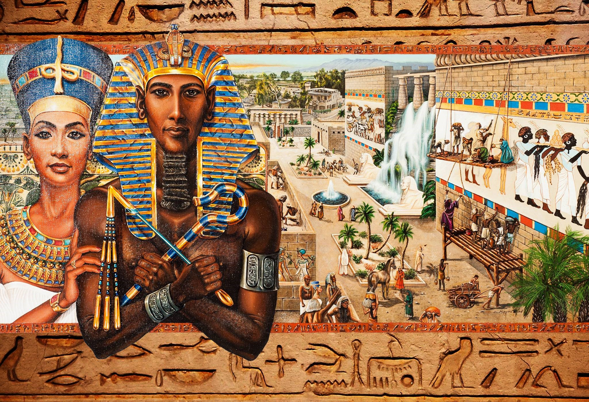
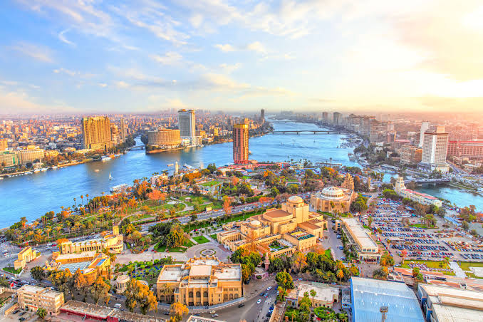
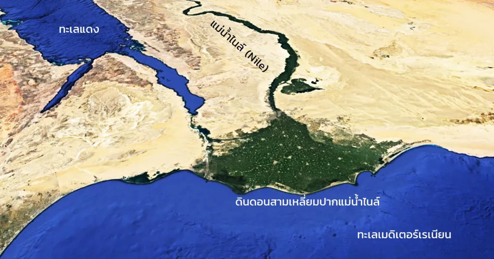
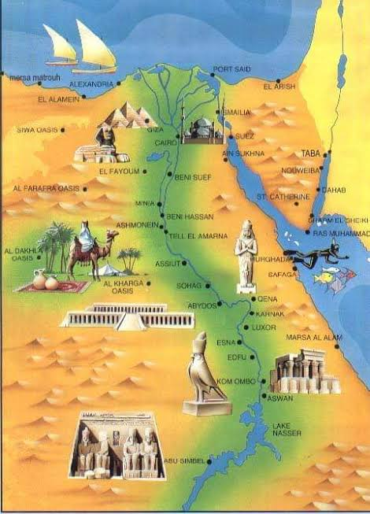
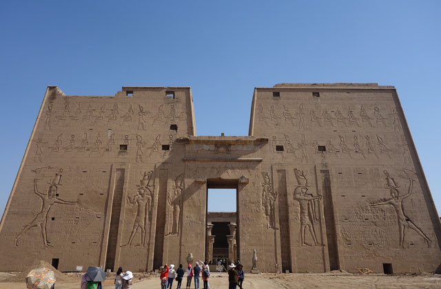
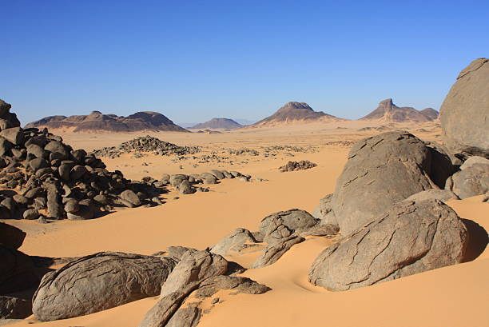
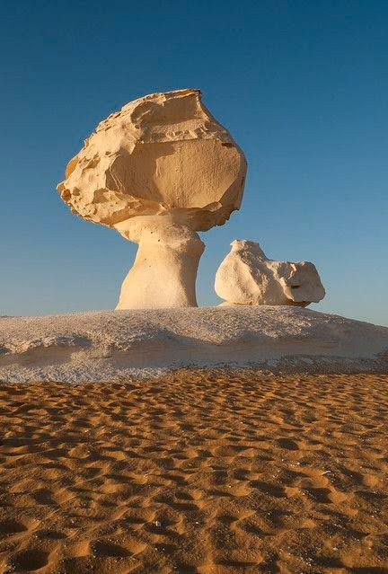

การศึกษาลักษณะทางกายภาพและลักษณะทางมนุษย์ของประเทศอียิปต์
ตั้งอยู่ทางตะวันออกเฉียงเหนือของทวีปแอฟริกา มีลักษณะเด่นคือพื้นที่ทะเลทรายกว้างใหญ่
และมีแม่น้ำไนล์เป็นแหล่งน้ำสำคัญที่หล่อเลี้ยงประชากรมาแต่โบราณ
👆 คลิกที่หัวข้อเพื่อเปิดอ่านเนื้อหา

ภูมิศาสตร์ของอียิปต์ คือการศึกษาลักษณะทางกายภาพและลักษณะทางมนุษย์ของประเทศอียิปต์ ซึ่งตั้งอยู่ทางตะวันออกเฉียงเหนือของทวีปแอฟริกา มีลักษณะเด่นคือพื้นที่ทะเลทรายกว้างใหญ่ และมีแม่น้ำไนล์เป็นแหล่งน้ำสำคัญที่หล่อเลี้ยงประชากรมาแต่โบราณ
อียิปต์เป็นประเทศที่มีเอกลักษณ์ เพราะมีแผ่นดินเชื่อมต่อระหว่างทวีปแอฟริกากับเอเชียผ่านคาบสมุทรไซนาย เป็นจุดบรรจบของสามทวีปเก่าแก่อย่างแอฟริกา เอเชีย และยุโรป

ภาพ: แผนที่แสดงอาณาเขตและประเทศเพื่อนบ้านของอียิปต์อียิปต์ตั้งอยู่ระหว่างสองทวีป ทำให้เป็นประเทศที่มีเอกลักษณ์ พื้นที่ส่วนใหญ่ของอียิปต์อยู่ในภาคตะวันออกเฉียงเหนือของทวีปแอฟริกา ในขณะที่คาบสมุทรไซนายอยู่ในทวีปเอเชีย ด้วยพื้นที่กว่าหนึ่งล้านตารางกิโลเมตร อียิปต์มีขนาดใหญ่กว่าสเปนประมาณสองเท่า
อียิปต์มีพรมแดนติดกับสี่ประเทศ ทางทิศตะวันออกเฉียงเหนือติดกับปาเลสไตน์และฉนวนกาซา ซึ่งทอดยาวเป็นเส้นตรงจากเมืองราฟาห์บนชายฝั่งทะเลเมดิเตอร์เรเนียนไปจนถึงเมืองทาบาบนอ่าวอัคคาบา
ทางทิศใต้ติดกับประเทศซูดาน โดยส่วนใหญ่ทอดยาวไปตามเส้นละติจูด 22 องศาเหนือ ส่วนทางทิศตะวันตกติดกับประเทศลิเบีย ซึ่งทอดยาวไปตามเส้นเมริเดียน 25 องศาตะวันออก และผ่านทะเลทรายซาฮารา
จุดบรรจบสามประเทศ (ซูดาน ลิเบีย และอียิปต์) ที่ปลายตะวันตกเฉียงใต้ เต็มไปด้วยสัญลักษณ์ นั่นคือ ภูเขาอูเวนาต ซึ่งมีภาพสลักหินยุคก่อนประวัติศาสตร์ที่สร้างโดยชาวบุชแมนเมื่อหลายหมื่นปีก่อน
อีกหนึ่งลักษณะสำคัญคือ ชายฝั่งทะเลที่ยาวเกือบ 2,500 กิโลเมตร ติดกับทะเลสองแห่ง ได้แก่ ทะเลเมดิเตอร์เรเนียนทางเหนือ และทะเลแดงทางตะวันออก ซึ่งเชื่อมต่อกันด้วยคลองสุเอซ จุดเปลี่ยนสำคัญในการเดินเรือของโลกในปี ค.ศ. 1869
ติดทะเลเมดิเตอร์เรเนียน
ติดทะเลแดง + อิสราเอล/ฉนวนกาซา
ติดประเทศซูดาน
ติดประเทศลิเบีย

สามเหลี่ยมปากแม่น้ำไนล์เป็นพื้นที่ขนาดใหญ่ที่ก่อตัวขึ้นบริเวณปากแม่น้ำไนล์ มีรูปร่างคล้ายสามเหลี่ยม ชาวกรีกโบราณตั้งชื่อว่า "เดลต้า" ตามตัวอักษรกรีก (Δ) เนื่องจากรูปร่างของมัน
รูปทรงนี้เกิดจากแม่น้ำไนล์แยกออกเป็นสองสาขาที่เกือบสมมาตรกันทางตอนเหนือของกรุงไคโร คือสาขาโรเซตตาและสาขาดามิเอตตา ระยะห่างระหว่างปากแม่น้ำทั้งสองประมาณ 160 กิโลเมตร
พื้นที่สองฝั่งมีความอุดมสมบูรณ์สูง เหมาะแก่การเกษตรกรรม ส่งผลให้ที่นี่มีประชากรหนาแน่นประมาณ 40 ล้านคน คิดเป็นเกือบ 40% ของประชากรทั้งประเทศ
เมืองสำคัญในภูมิภาคนี้ ได้แก่ อเล็กซานเดรีย พอร์ตซาอิด ตันตา เอลมันซูรา ดามันฮูร์ และซากาซิก
ไคโร เมืองหลวงของประเทศอียิปต์ เป็นเมืองขนาดใหญ่ที่ก่อตัวเป็นภูมิภาคหนึ่งในตัวเอง เป็นมหานครที่ผสมผสานตึกระฟ้าและหอคอยมัสยิด นำไปสู่สิ่งที่ผู้เชี่ยวชาญเรียกว่า ภาวะเมืองล้นเกิน (hyper-urbanization)
มีประชากรประมาณ 10.1 ล้านคนในเขตเมือง (ปี 2022) และเขตมหานครเกรตเตอร์ไคโรมีประชากรราว 21.9 ล้านคน จึงเป็นเขตเมืองที่หนาแน่นที่สุดในทวีปแอฟริกา
แม้ไม่ได้ตั้งอยู่ใจกลางประเทศ แต่เป็นศูนย์กลางเพราะเชื่อมระหว่างสามเหลี่ยมปากแม่น้ำไนล์และอียิปต์ตอนบน ภูมิภาคนี้ยังมีพีระมิดแห่งกิซา พีระมิดแห่งซักการา และสุสานเมมฟิส รวมถึงพิพิธภัณฑ์อียิปต์

อียิปต์ตอนบนเป็นภูมิประเทศยาวและแคบ ทอดยาวตามหุบเขาแม่น้ำไนล์ จากโอเอซิสฟายูมไปจนถึงน้ำตกแห่งแรกที่เมืองอัสวาน ระยะทางประมาณ 850 กิโลเมตร
สองฝั่งแม่น้ำเป็นที่ราบอุดมสมบูรณ์ กว้าง 1–20 กิโลเมตร อียิปต์ตอนบนไม่ควรสับสนกับแม่น้ำไนล์ตอนบน ซึ่งประกอบด้วยไนล์ขาวและไนล์ฟ้า ไหลผ่านแอฟริกาตะวันออกก่อนบรรจบที่คาร์ทูม
ภูมิภาคนี้มีโบราณสถานมากมาย และเป็นเส้นทางล่องเรือสำราญจากเอสนาไปอัสวาน

อียิปต์ตอนกลางไม่ใช่เขตแบ่งย่อยอย่างเป็นทางการ แต่มีความสำคัญทางประวัติศาสตร์ ครอบคลุมหุบเขาแม่น้ำไนล์ตั้งแต่เหนือโอเอซิสฟายูมถึงเมืองอาซิอุต
เป็นที่ตั้งของอนุสรณ์สถานและเมืองที่มีคุณค่าทางประวัติศาสตร์ เช่น อามาร์นา อาซิอุต อะบิโดส เดนเดรา และโอเอซิสฟายูม
ไม่ควรสับสนกับอาณาจักรกลางของอียิปต์ ซึ่งเป็นช่วงเวลาทางประวัติศาสตร์ (2050–1750 ปีก่อนคริสตกาล) ไม่เกี่ยวข้องทางภูมิศาสตร์
นูเบียเป็นภูมิภาคทางประวัติศาสตร์ระหว่างอียิปต์และซูดาน นูเบียตอนล่างอยู่ระหว่างน้ำตกไนล์แห่งแรกและพรมแดนซูดาน อยู่ในเขตจังหวัดอัสวาน
ปัจจุบันนูเบียยังคงมีสถาปัตยกรรมและภาษาโบราณที่โดดเด่น หมู่บ้านหลายแห่งจมอยู่ใต้น้ำช่วงกลางศตวรรษที่ 20 จากการสร้างเขื่อนอัสวาน ทำให้เกิดทะเลสาบนัสเซอร์

ทะเลทรายตะวันตกแท้จริงเป็นส่วนตะวันออกของทะเลทรายซาฮารา ทอดยาวจากชายแดนลิเบียถึงฝั่งซ้ายของแม่น้ำ กินพื้นที่ประมาณสองในสามของประเทศ (มากกว่า 650,000 ตร.กม.)
มีเนินทรายสีทองอย่างทะเลทรายทรายใหญ่ และรูปทรงธรณีวิทยาแปลกตาอย่างทะเลทรายขาว ซึ่งบางคนเรียก 'อะแลสกาแห่งอียิปต์'
มีโอเอซิสงดงามจากน้ำใต้ดิน เช่น โอเอซิสซีวา บาฮาริยา และดักลา

ทะเลทรายตะวันออกหรือทะเลทรายอาหรับ ทอดยาวทางตะวันออกของแม่น้ำไนล์ รวมถึงคาบสมุทรไซนายอีกฝั่งของทะเลแดง แห้งแล้งกว่าทะเลทรายตะวันตก แทบไม่มีโอเอซิส แต่มีลำธารแห้ง (wadis) มากมาย
ภูมิประเทศขรุขระและเป็นภูเขา มียอดเขาสูงสุดในอียิปต์ เช่น ชัยบ์ อัล-บานัต (2,187 ม.) ส่วนไซนายมีภูเขาแคทเธอรีน (2,642 ม.) และภูเขาไซนาย (2,285 ม.) สถานที่ที่โมเสสรับบัญญัติสิบประการ
คาบสมุทรไซนายเป็นแผ่นดินสามเหลี่ยมในทวีปเอเชีย ถูกส่งคืนให้อียิปต์ในปี 1982 ภายใต้ข้อตกลงแคมป์เดวิด
ทะเลเมดิเตอร์เรเนียนตั้งอยู่ทาง ทิศเหนือ ของอียิปต์ เป็นทะเลกึ่งปิดที่เชื่อมต่อกับมหาสมุทรแอตแลนติก อียิปต์มีชายฝั่งติดทะเลนี้ยาวประมาณ 1,000 กิโลเมตร
ทะเลแดงตั้งอยู่ทาง ทิศตะวันออก ของอียิปต์ คั่นระหว่างแอฟริกากับคาบสมุทรอาหรับ (เอเชีย) อียิปต์มีชายฝั่งติดทะเลนี้ยาวเกือบ 1,500 กิโลเมตร
อียิปต์แบ่งออกเป็น 27 จังหวัด (Governorate) แต่ละจังหวัดมีผู้ว่าการรัฐที่ได้รับการแต่งตั้งโดยตรงจากประธานาธิบดี โดยแบ่งเป็น 9 จังหวัดในอียิปต์ตอนล่าง (สามเหลี่ยมปากแม่น้ำไนล์) 10 จังหวัดในอียิปต์ตอนบนตามแนวแม่น้ำไนล์ และ 5 จังหวัดชายแดนที่ครอบคลุมไซนายและทะเลทรายทั้งสองฝั่ง
จังหวัดที่ใหญ่ที่สุดเรียงตามลำดับคือ หุบเขาใหม่ (New Valley) ทะเลแดง และมาตรูห์ เนื่องจากครอบคลุมทะเลทรายกว้างใหญ่ ส่วนจังหวัดที่เล็กที่สุดมีพื้นที่เพียงเขตเมือง เช่น ลักซอร์ พอร์ตซาอิด หรือไคโร
จังหวัดที่มีประชากรมากที่สุด ได้แก่ ไคโร กิซา ชาร์เกีย เบเฮรา และดาคาห์เลีย ซึ่งตั้งอยู่ในภาคกลางหรือสามเหลี่ยมปากแม่น้ำไนล์
อียิปต์มีดินแดนพิพาทกับซูดานหลายแห่ง รวมถึงสามเหลี่ยมฮาลาอิบและสามเหลี่ยมบีร์ ทาวิล ทางเหนือของเส้นละติจูดที่ 22 (อยู่ในจังหวัดทะเลแดง)
| # | จังหวัด (Governorate) | เมืองหลวงของจังหวัด (Capital) | รหัส ISO |
|---|
กดสลับโหมด ดาวเทียม / แผนที่ถนน ได้ ซูมเข้า–ออกได้จริง และแตะหมุดเพื่อดูชื่อจังหวัดและเมืองหลวง
💡 กดที่หมุดเพื่อดูชื่อจังหวัด (ไทย/อังกฤษ) และเมืองหลวง แล้วกด "อ่านรายละเอียด" เพื่อดูข้อมูลเต็ม
• เมืองหลวงประเทศอียิปต์คือกรุงไคโร (Capital Cairo) และชื่อทางการ สาธารณรัฐอาหรับอียิปต์: gov.uk — Egypt Toponymic Factfile (PCGN)
• ข้อมูลกรุงไคโร (พื้นที่ 2,734 ตร.กม. เขตมหานคร / ประชากร 10.1 ล้านคน ปี 2022 / มหานคร 21.9 ล้านคน / เขตผู้ว่าการไคโร / แหล่งมรดกโลกปี 1979): th.wikipedia.org — ไคโร
• ข้อมูลเขตผู้ว่าการไคโร (ISO 3166-2: EG-C, ศูนย์กลางการบริหาร Al Qāhirah): PCGN — Administrative Divisions
• ข้อมูลจังหวัดทะเลแดง (พื้นที่ 119,099 ตร.กม. / ประชากร 410,229 / เมืองหลวงฮูร์กาดา): en.wikipedia.org — Red Sea Governorate
• ข้อมูลภูมิศาสตร์และภูมิภาคของอียิปต์: worldatlas.com — The Geography of Egypt
• แผนที่จังหวัดและเมืองหลวง (OCHA/ReliefWeb): reliefweb.int — Egypt Governorate & Capital Map
หมายเหตุ: เนื้อหาเรียบเรียงเพื่อการศึกษา · ข้อมูลประชากร/พื้นที่อาจแตกต่างเล็กน้อยตามปีที่เก็บข้อมูล